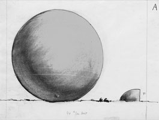

something:
elementary shapes & non-shapes
something:
elementary shapes & non-shapes  radical
art homepage
radical
art homepage
 something:
elementary shapes & non-shapes
something:
elementary shapes & non-shapes  radical
art homepage
radical
art homepage
balls
Akira Kanayama,
1955

Piero Manzoni:
Pneumatic for Light and Gas Ballets, 1960
Yves Klein:
Éponge Bleue,
1960
herman de vries:
zonder titel,
1961
Wim T. Schippers:
Adynamische Sculptuur,
1962
Armando:
Gestalt,
1999
Mathias Goeritz:
Figura Geométrica, 1961
James Lee Byars:
Monument to Language, 1996
Willem de Ridder:
Papieren Konstellaties, 1961
Eva Hesse:
S-30, 1966
John Chamberlain:Untitled, 1973